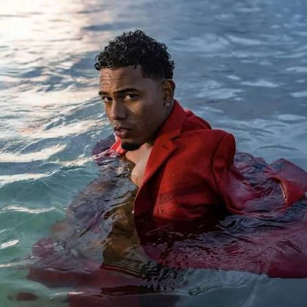

Descubre los artistas principales que actuaran en el Cronos Sound Festival.
Anuel AA es un cantante puertorriqueño de música urbana.
Es conocido por sus canciones de reggaetón y trap latino.
Algunas de sus canciones más conocidas son "China" y "Secreto".

Myke Towers es un cantante y compositor puertorriqueño.
Su música mezcla reggaetón, trap y música urbana.
Algunas de sus canciones conocidas son "LALA" y "La Curiosidad".
Quevedo es un cantante español nacido en Gran Canaria.
Se hizo conocido internacionalmente gracias a sus canciones de reggaetón y música urbana.
Una de sus canciones más conocidas es "Quédate".